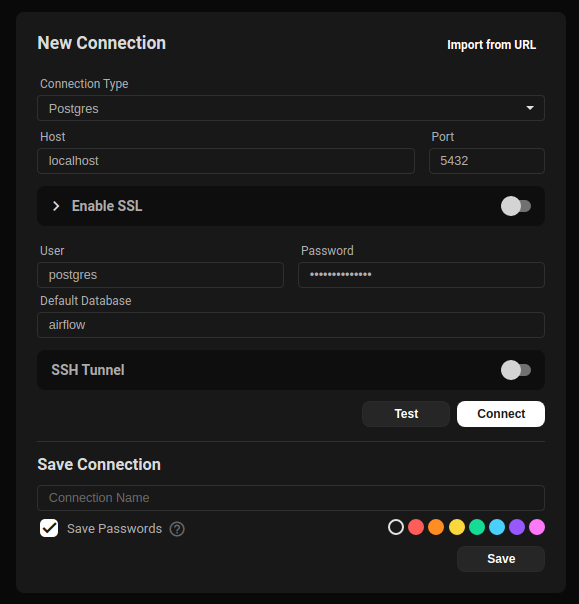

Basics
Prerequisites
- Basic Networking
- Basic Command Line
- Basic Programming & Software Development Process
Containers vs Virtualization
Virtualization

Containerization

Running Containers
คำสั่งการใช้งาน Docker มีรูปแบบ
Starting Containers
สิ่งที่เกิดขึ้นหลังป้อนคำสั่ง
- Docker ไปค้นหา Image (นึกถึงโปรแกรมสำเร็จรูปที่แพกเกจเรียบร้อย มีไลบรารี่ครบถ้วน พร้อมใช้งาน) บนเครื่องคอมที่เราใช้งาน
- ถ้าไม่เจอ Image Docker มันจะไปค้นหาที่ Docker Hub ซึ่งเป็น Repository กลางสำหรับเก็บ Image
- เมื่อพบ Image แล้ว Docker จะ Download มาเก็บที่เครื่องคอมเรา
- Docker Engine เอา Image มาทำงาน ผลลัพธ์ของการรัน Image คือ Container
--nameคือการตั้งชื่อ Container ถ้าไม่ได้ตั้ง Docker จะให้ ID มาแทน-d หรือ --detachคือให้คืน Prompt ไม่ต้องแสดง Logs ตอนรัน-p หรือ --publishคือการบอกให้ Docker Engine เชื่อมต่อ Host Port 8080 กับ Container Port 80- เข้า Web Browser ที่ http://localhost:8080 เพื่อดู Nginx Welcome Page
Managing Containers
การบริหารจัดการ Container ใช้กลุ่มคำสั่ง container เช่น
List Containers
ดูเฉพาะ Container ที่ทำงานอยู่
ดู Container ทั้งหมด (ทำงาน และ หยุดทำงาน)
Stop Containers
Remove Containers
Container Logs
Container Ports
Container Processes
Resource Consumption
Inspect Containers
ตรวจสอบ IP Address ด้วยคำสั่ง
'{{ .NetworkSettings.IPAddress }}' คือ Go Template
Access Containers
execคือคำสั่งให้รันโปรแกรมใน Container-itคือinteractive ttyนึกถึงการเข้าใช้งาน Shellbashคือ ชื่อโปรแกรมที่ต้องการรันใน Container
Clean up
ลบทุกสิ่งอย่าง (ยกเว้น Volume)
Example 1 - PostgreSQL
Starting a Database
docker container run \
--name mypostgres \
-e POSTGRES_PASSWORD=secretpassword \
-d -p 5432:5432 \
postgres
-e หรือ --env คือ Environment Variables ที่ต้องใช้งานใน Container
Accessing psql
คำสั่งพื้นฐาน psql
\lหรือ\l+แสดงรายการ DatabaseSELECT datname FROM pg_database;\dtหรือ\dt *แสดงรายการ Relations (Tables)CREATE DATABASE airflow;สร้าง Database ชื่อว่า Airflow- ใช้คำสั่ง SQL ในการสร้างและทำงานกับข้อมูลได้เลย (จะใช้ CRUD กันจริงจังอีกที Session อื่น)
Connecting from Host
ใช้โปรแกรมบริหารจัดการ Database (เช่น dbeaver หรือ beekeeper-studio) ในการเชื่อมต่อ PostgreSQL โดยกำหนด
- Host =
localhost, Port =5432 - Username =
postgres, Password =secretpassword

Stopping the Database
Removing the Database
Example 2 - Web Server
Starting a Web Server
Checking Container
เปิดเว็บ Browser http://localhost:8080
Changing Default Page
- ติดตั้ง Text Editor
vimด้วยคำสั่งapt update && apt install vim -y - แก้ไขไฟล์ html
vim /usr/share/nginx/html/index.html - กด Refresh ที่ Browserเพื่อตรวจสอบการแก้ไข
Removing the Web Server
-f คือ force บังคับ Remove โดยไม่ต้อง Stop ก่อน